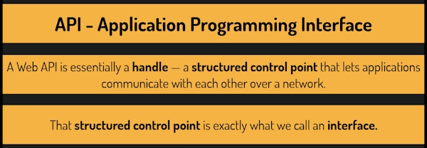
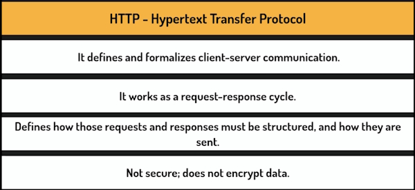
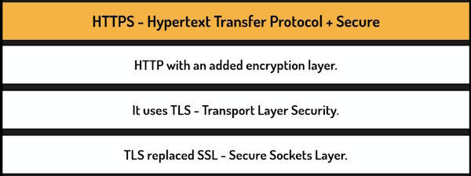
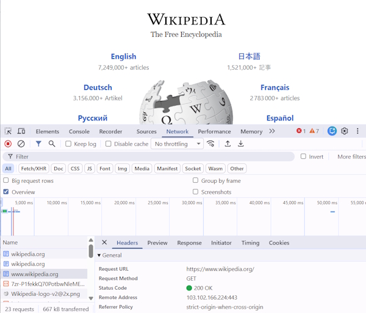
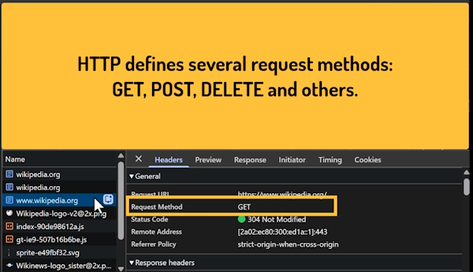
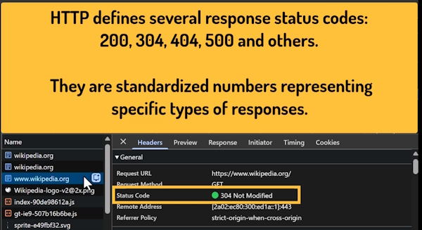
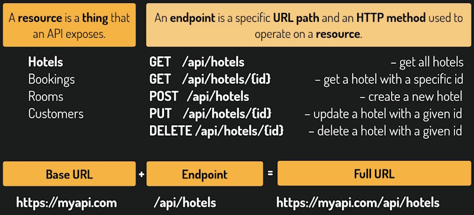
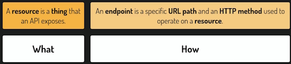
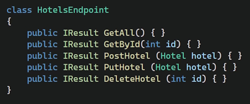
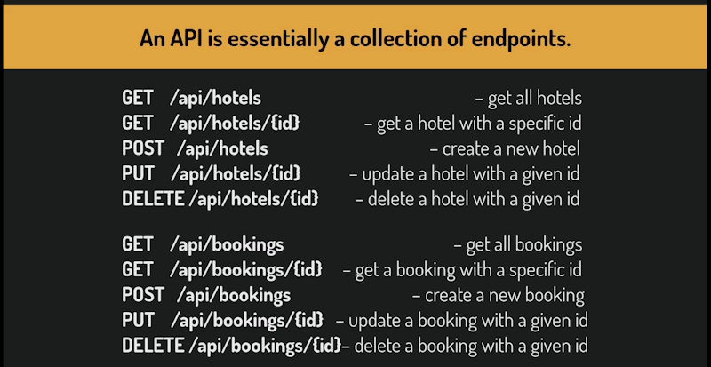

<!DOCTYPE html>
<html>
<head>
<title>02-The-Basics-Of-APIs.md</title>
<meta http-equiv="Content-type" content="text/html;charset=UTF-8">

<style>
/* https://github.com/microsoft/vscode/blob/master/extensions/markdown-language-features/media/markdown.css */
/*---------------------------------------------------------------------------------------------
 *  Copyright (c) Microsoft Corporation. All rights reserved.
 *  Licensed under the MIT License. See License.txt in the project root for license information.
 *--------------------------------------------------------------------------------------------*/

body {
	font-family: var(--vscode-markdown-font-family, -apple-system, BlinkMacSystemFont, "Segoe WPC", "Segoe UI", "Ubuntu", "Droid Sans", sans-serif);
	font-size: var(--vscode-markdown-font-size, 14px);
	padding: 0 26px;
	line-height: var(--vscode-markdown-line-height, 22px);
	word-wrap: break-word;
}

#code-csp-warning {
	position: fixed;
	top: 0;
	right: 0;
	color: white;
	margin: 16px;
	text-align: center;
	font-size: 12px;
	font-family: sans-serif;
	background-color:#444444;
	cursor: pointer;
	padding: 6px;
	box-shadow: 1px 1px 1px rgba(0,0,0,.25);
}

#code-csp-warning:hover {
	text-decoration: none;
	background-color:#007acc;
	box-shadow: 2px 2px 2px rgba(0,0,0,.25);
}

body.scrollBeyondLastLine {
	margin-bottom: calc(100vh - 22px);
}

body.showEditorSelection .code-line {
	position: relative;
}

body.showEditorSelection .code-active-line:before,
body.showEditorSelection .code-line:hover:before {
	content: "";
	display: block;
	position: absolute;
	top: 0;
	left: -12px;
	height: 100%;
}

body.showEditorSelection li.code-active-line:before,
body.showEditorSelection li.code-line:hover:before {
	left: -30px;
}

.vscode-light.showEditorSelection .code-active-line:before {
	border-left: 3px solid rgba(0, 0, 0, 0.15);
}

.vscode-light.showEditorSelection .code-line:hover:before {
	border-left: 3px solid rgba(0, 0, 0, 0.40);
}

.vscode-light.showEditorSelection .code-line .code-line:hover:before {
	border-left: none;
}

.vscode-dark.showEditorSelection .code-active-line:before {
	border-left: 3px solid rgba(255, 255, 255, 0.4);
}

.vscode-dark.showEditorSelection .code-line:hover:before {
	border-left: 3px solid rgba(255, 255, 255, 0.60);
}

.vscode-dark.showEditorSelection .code-line .code-line:hover:before {
	border-left: none;
}

.vscode-high-contrast.showEditorSelection .code-active-line:before {
	border-left: 3px solid rgba(255, 160, 0, 0.7);
}

.vscode-high-contrast.showEditorSelection .code-line:hover:before {
	border-left: 3px solid rgba(255, 160, 0, 1);
}

.vscode-high-contrast.showEditorSelection .code-line .code-line:hover:before {
	border-left: none;
}

img {
	max-width: 100%;
	max-height: 100%;
}

a {
	text-decoration: none;
}

a:hover {
	text-decoration: underline;
}

a:focus,
input:focus,
select:focus,
textarea:focus {
	outline: 1px solid -webkit-focus-ring-color;
	outline-offset: -1px;
}

hr {
	border: 0;
	height: 2px;
	border-bottom: 2px solid;
}

h1 {
	padding-bottom: 0.3em;
	line-height: 1.2;
	border-bottom-width: 1px;
	border-bottom-style: solid;
}

h1, h2, h3 {
	font-weight: normal;
}

table {
	border-collapse: collapse;
}

table > thead > tr > th {
	text-align: left;
	border-bottom: 1px solid;
}

table > thead > tr > th,
table > thead > tr > td,
table > tbody > tr > th,
table > tbody > tr > td {
	padding: 5px 10px;
}

table > tbody > tr + tr > td {
	border-top: 1px solid;
}

blockquote {
	margin: 0 7px 0 5px;
	padding: 0 16px 0 10px;
	border-left-width: 5px;
	border-left-style: solid;
}

code {
	font-family: Menlo, Monaco, Consolas, "Droid Sans Mono", "Courier New", monospace, "Droid Sans Fallback";
	font-size: 1em;
	line-height: 1.357em;
}

body.wordWrap pre {
	white-space: pre-wrap;
}

pre:not(.hljs),
pre.hljs code > div {
	padding: 16px;
	border-radius: 3px;
	overflow: auto;
}

pre code {
	color: var(--vscode-editor-foreground);
	tab-size: 4;
}

/** Theming */

.vscode-light pre {
	background-color: rgba(220, 220, 220, 0.4);
}

.vscode-dark pre {
	background-color: rgba(10, 10, 10, 0.4);
}

.vscode-high-contrast pre {
	background-color: rgb(0, 0, 0);
}

.vscode-high-contrast h1 {
	border-color: rgb(0, 0, 0);
}

.vscode-light table > thead > tr > th {
	border-color: rgba(0, 0, 0, 0.69);
}

.vscode-dark table > thead > tr > th {
	border-color: rgba(255, 255, 255, 0.69);
}

.vscode-light h1,
.vscode-light hr,
.vscode-light table > tbody > tr + tr > td {
	border-color: rgba(0, 0, 0, 0.18);
}

.vscode-dark h1,
.vscode-dark hr,
.vscode-dark table > tbody > tr + tr > td {
	border-color: rgba(255, 255, 255, 0.18);
}

</style>

<style>
/* Tomorrow Theme */
/* http://jmblog.github.com/color-themes-for-google-code-highlightjs */
/* Original theme - https://github.com/chriskempson/tomorrow-theme */

/* Tomorrow Comment */
.hljs-comment,
.hljs-quote {
	color: #8e908c;
}

/* Tomorrow Red */
.hljs-variable,
.hljs-template-variable,
.hljs-tag,
.hljs-name,
.hljs-selector-id,
.hljs-selector-class,
.hljs-regexp,
.hljs-deletion {
	color: #c82829;
}

/* Tomorrow Orange */
.hljs-number,
.hljs-built_in,
.hljs-builtin-name,
.hljs-literal,
.hljs-type,
.hljs-params,
.hljs-meta,
.hljs-link {
	color: #f5871f;
}

/* Tomorrow Yellow */
.hljs-attribute {
	color: #eab700;
}

/* Tomorrow Green */
.hljs-string,
.hljs-symbol,
.hljs-bullet,
.hljs-addition {
	color: #718c00;
}

/* Tomorrow Blue */
.hljs-title,
.hljs-section {
	color: #4271ae;
}

/* Tomorrow Purple */
.hljs-keyword,
.hljs-selector-tag {
	color: #8959a8;
}

.hljs {
	display: block;
	overflow-x: auto;
	color: #4d4d4c;
	padding: 0.5em;
}

.hljs-emphasis {
	font-style: italic;
}

.hljs-strong {
	font-weight: bold;
}
</style>

<style>
/*
 * Markdown PDF CSS
 */

 body {
	font-family: -apple-system, BlinkMacSystemFont, "Segoe WPC", "Segoe UI", "Ubuntu", "Droid Sans", sans-serif, "Meiryo";
	padding: 0 12px;
}

pre {
	background-color: #f8f8f8;
	border: 1px solid #cccccc;
	border-radius: 3px;
	overflow-x: auto;
	white-space: pre-wrap;
	overflow-wrap: break-word;
}

pre:not(.hljs) {
	padding: 23px;
	line-height: 19px;
}

blockquote {
	background: rgba(127, 127, 127, 0.1);
	border-color: rgba(0, 122, 204, 0.5);
}

.emoji {
	height: 1.4em;
}

code {
	font-size: 14px;
	line-height: 19px;
}

/* for inline code */
:not(pre):not(.hljs) > code {
	color: #C9AE75; /* Change the old color so it seems less like an error */
	font-size: inherit;
}

/* Page Break : use <div class="page"/> or <div class="page"></div> to insert page break
-------------------------------------------------------- */
.page {
	page-break-after: always;
}

</style>

<script src="https://unpkg.com/mermaid/dist/mermaid.min.js"></script>
</head>
<body>
  <script>
    mermaid.initialize({
      startOnLoad: true,
      theme: document.body.classList.contains('vscode-dark') || document.body.classList.contains('vscode-high-contrast')
          ? 'dark'
          : 'default'
    });
<h1 id="the-basics-of-apis">The Basics of APIs</h1>
<h2 id="application-programming-interface">Application Programming Interface</h2>
<h3 id="what-an-application-programming-interface-actually-means">What an Application Programming Interface actually means</h3>
<p>A web API is essentially a <strong>handle</strong>, a <strong>structured control point</strong> that lets applications communicate with each other over a network.</p>
<p>That <strong>structured control point</strong> is exactly what we call an <strong>interface</strong>.</p>
<p></p>
<p>And web APIs are not the only kind of APIs that exist.</p>
<p>Any structured protocol for communicating with an application is an API.</p>
<p>For example, when we write a program that needs to launch a Windows application, we use the Windows API.</p>
<p>We call a function that tells Windows to open this application.</p>
<p>If Windows did not expose an API, we would have no way of communicating that from our own code.</p>
<h2 id="http---how-web-communication-works">HTTP - How Web communication works</h2>
<p></p>
<p>HTTP isn't secure so HTTPS was created to add a secure layer.</p>
<p></p>
<h2 id="web-communication-in-action">Web communication in action</h2>
<p></p>
<p>There are a number of request methods that are available to us.</p>
<p></p>
<p>We get status codes from the request to show if the request was successful or not.</p>
<p></p>
<p>In the case above a status code of <strong>304</strong> means that the web page was cached and successful. Normally you would see a status code of <strong>200</strong> meaning successfully received.</p>
<h2 id="requests-and-responses">Requests and Responses</h2>
<p>The client sends a <strong>Request</strong> to the API. In the example it is a <code>GET</code> request for a book with the <code>Id</code> of 1.</p>
<p></p>
<p>The <strong>Response</strong> is sent back to the user as JSON.</p>
<h2 id="resource-vs-endpoint">Resource vs Endpoint</h2>
<p>A <strong>Resource</strong> is a <strong>thing</strong> that the API exposes. For example a resource could be a hotel, bookings, rooms,  customers, etc.</p>
<p>An <strong>Endpoint</strong> is a specific <strong>URL path</strong> and an <strong>HTTP method</strong> used to operate on a <strong>resource</strong>.</p>
<p></p>
<p>We could also have another set of endpoints that work on bookings.</p>
<p>Another conceptual way to look at resources verses endpoints is that a resource exposes <strong>what</strong> an API exposes and an endpoint is <strong>how</strong> we manipulate that resource.</p>
<p></p>
<p>When building an API we typically group our endpoints related to a give resource in one class and write one method for each endpoint.</p>
<p></p>
<p>These keep the code organised.</p>
<p>An API is essentially a collection of endpoints that form a contract that tell anybody coding the API exactly what operations are available.</p>
<p></p>
<p>The API documentation also allows the user to see how the endpoints are grouped and used. For this we will use Swagger.</p>

</body>
</html>
  </script>
